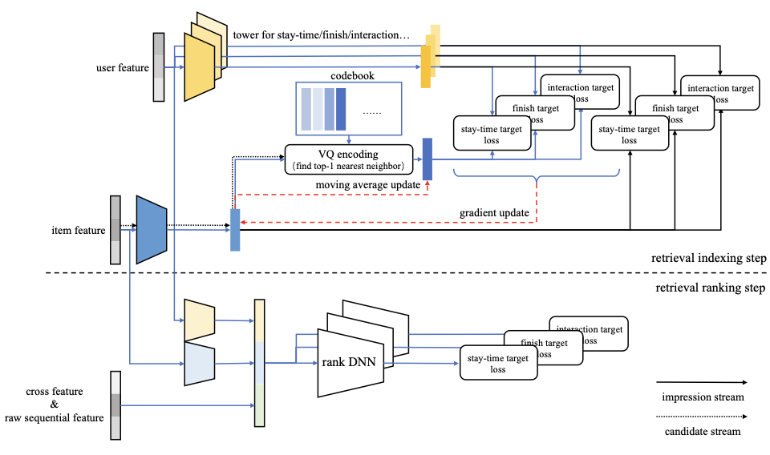

2.5.2. 实时更新的流式索引¶
Trinity通过聚类统计解决了全量兴趣建模的问题，但索引结构本身的时效性问题仍然存在。传统的向量索引需要定期重建，在此期间物品到索引的映射关系保持固定。然而在快节奏的内容平台上，新内容不断涌入，热点话题快速更迭，固定的索引结构无法及时反映这些变化。
Streaming VQ (Bin et al., 2025) 提出了一种流式更新的向量量化索引结构，使物品能够实时被分配到合适的聚类中，同时聚类中心也能持续适应数据分布的变化。
2.5.2.1. 流式索引的核心机制¶
如 图2.5.2 所示，Streaming VQ的训练框架包含两个步骤：索引步骤和排序步骤。在索引步骤中，系统采用双塔架构生成用户侧embedding \(\boldsymbol{u}\) 和物品侧embedding \(\boldsymbol{v}\)。首先通过一个辅助任务优化这两个embedding：
这是一个in-batch对比学习损失，它使物品embedding能够在不依赖聚类的情况下独立学习语义表示，为后续的流式索引更新提供稳定的基础。
{kind=link}

图2.5.2 Streaming VQ训练框架。索引步骤通过VQ编码将物品分配到聚类，排序步骤使用更复杂的模型对聚类内物品进行进一步筛选。¶
然后，物品embedding通过最近邻搜索被量化到聚类：
其中 \(Q(\cdot)\) 表示量化操作。量化后的聚类中心 \(\boldsymbol{e}\) 也参与用户-聚类匹配的优化：
物品到聚类的映射关系被实时写入参数服务器（Parameter Server），聚类中心则通过指数移动平均机制（EMA）更新（即用所属物品embedding的加权平均来平滑更新聚类中心）。这种设计使得整个索引结构能够随着训练流程实时更新，无需中断式的重建操作。
2.5.2.2. 索引的可修复性¶
流式更新带来了即时性的优势，但也引入了新的风险：没有定期重建来“重置”系统状态，模型可能逐渐退化。原始VQ-VAE通过相似性损失 \(L_{sim} = \sum_o ||\boldsymbol{v}_o - \boldsymbol{e}_o||^2\) 来约束物品embedding和聚类中心的距离。然而在推荐场景中，数据分布会随时间漂移，物品的聚类归属本身就应该是动态变化的，\(L_{sim}\) 反而会阻碍这种必要的变化。
Streaming VQ的解决方案是用 \(L_{aux}\) 替代 \(L_{sim}\)。\(L_{aux}\) 使物品embedding能够独立于聚类中心进行更新，然后 \(L_{ind}\) 再根据更新后的物品分布调整聚类中心。这种“物品优先”的设计原则确保了聚类结构能够持续适应数据分布的变化，而不是将物品锁定在可能已经过时的聚类中。
2.5.2.3. 索引平衡性¶
召回模型的另一个重要目标是将热门物品均匀分布在不同的聚类中，以便通过选择少数聚类就能快速缩小候选集规模。然而，许多现有方法都面临流行度偏差问题，导致热门物品聚集在少数头部聚类中。
Streaming VQ通过多种机制来促进索引平衡。首先，\(L_{ind}\) 是用户-聚类匹配的softmax损失，热门物品占据了绝大多数的训练样本。如果热门物品都聚集在少数聚类中，这些聚类中心需要同时代表大量语义各异的物品，导致表示变得模糊、匹配精度下降。而将热门物品分散到更多聚类中，每个聚类中心只需代表更少、更一致的物品，匹配损失自然更低。因此，\(L_{ind}\) 的优化过程本身就倾向于产生均衡的索引分布。
其次，Streaming VQ在聚类中心的EMA更新机制中引入了流行度调节项。回顾前文，物品通过量化被分配到聚类后，聚类中心 \(\boldsymbol{e}^k\) 会通过EMA机制更新。具体来说，Streaming VQ维护每个聚类的累积表示 \(\boldsymbol{w}_k\) 和累积计数 \(c_k\)：
其中 \(\boldsymbol{v}_j\) 是被分配到聚类 \(k\) 的物品embedding，\(\delta^t\) 是该物品的出现间隔估计值（冷门物品的间隔更大）。最终的聚类中心通过归一化得到：\(\boldsymbol{e}^k = \boldsymbol{w}_k / c_k\)。当 \(\beta > 0\) 时，冷门物品在更新中获得更大的权重，使得聚类中心不会完全被热门物品主导，从而改善索引的平衡性。
此外，Streaming VQ对前述的量化公式进行了改进，在最近邻搜索中引入扰动机制：
其中 \(c_k\) 是聚类 \(k\) 的累计出现次数，\(s\) 是一个阈值参数。当某个聚类的样本量低于平均值的 \(1/s\) 时，折扣系数 \(r\) 小于1，使得该聚类在距离计算中“更近”，从而更容易吸引物品加入。
2.5.2.4. 归并排序的服务策略¶
在服务阶段，Streaming VQ将物品embedding显式地分解为个性化部分和流行度部分：
其中 \(v_{bias}\) 是物品的独立可学习偏置，刻画与用户无关的全局受欢迎度，\(Q(\boldsymbol{v}_{emb})\) 则承担个性化匹配。这样的分解让聚类本身保持“按语义分组”，而不被热门度拉偏，同时在同一聚类内可以用 \(v_{bias}\) 做初步排序。基于此，Streaming VQ采用归并排序策略来高效地选择候选物品：首先，\(\boldsymbol{u}^T \cdot Q(\boldsymbol{v}_{emb})\) 提供聚类级别的排序；然后，\(v_{bias}\) 提供聚类内物品的排序。通过最大堆实现的K路归并排序，系统可以确保所有聚类都有机会贡献候选物品，即使某些聚类的物品数量超过了后续处理步骤的输入限制。
这种策略使Streaming VQ能够以较小的候选规模（相比其他方法）达到更好的召回效果，因为平衡的索引结构保证了候选集的多样性，归并排序则确保了每个聚类的优质物品都能被考虑。